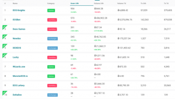
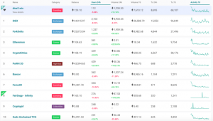

dAppsの統計情報を提供するDappRadarによると、EOSプラットフォーム上のdAppsは、すでにトランザクション量に関してEthereumベースのdAppsを上回っています。
ここに詳細があります。
DappRaderの統計によると、EOSブロックチェーン上で動作する多くのアプリケーションは、現在、Ethereumベースのものよりも多くの収益を上げています。

当然ながら、おそらくその大きなボリュームはギャンブルプラットフォームで行われていると考えられます。実装が比較的簡単なのが理由に上がります。
ここでEOS上のトップ10のdAppがあります。EOSBetはユーザー数では2位ですが、そのネットワークを経由して稼動している金額はさらに上昇していると考えられます。

EOSのTOP10dApps
Top 10 EOS dApps, Dapp raderより
{kind=link}
対照的に、こちらはEthereumのTOP10のdAppsがあります。

Ethereum dApps Top 10, courtesy of DappRadar
EthereumのdAppsのTOP10、Dapp raderより
{kind=link}
Ethereumは、300ドルを下回っている価格の面だけでなく、他のアプリの基礎として期待に応えていないという一般的な認識の点でも、開発が遅れて苦労しています。
EOSの創造者であるダニエル・ラリマー（Daniel Larimer）をはじめ、業界の他の人たちからの興味深い取り組みが生まれました。
上記の数字を見ると、ETHにとっては悲しいことだけではありません。
これはとても簡単に理解することができます。EOSBetいおいて興味深いのはEOSが収益を歪めている点です。これはユーザーベースのEthereumからすると明らかな利点となります。
ユーザーにとって、EOSのブロックチェーン上で動作する最初のゲームであるRPGであり、Ethereumリストで３位にランクインしているEOSKnightsというdAppsがあります。
実際に、EOSの5位の提携であるDEXEOS取引所は、競合他社のdAppのトップ10に入ることさえできませんでした。
それらのユーザーの人数は、後半の多くの会話データがソースとなっています。
dAppsにおいてICO投資家が期待していた環境になるには多くの時間と道のりが必要ということが明らかになりました。
これらの主な例示は、8月7日に約60人のデイリーユーザーしかいない「予測市場アプリAuger」で、評価額は308億ドルです。
このような評価額の膨大している裏では、単純な数学的な公式がそれぞれ500万ドルの価値があると評価されているからです。
Augerは注目すべきdAppsでしたが、CryptoGlobeが行ったその他の顧客別評価のいくつかは、ファンダメンタル情報を追いかけるユーザーたちに同様に注目されていました。

{kind=link}
昨年のブロックチェーンイノベーションの大きな推進要因の1つである分散型アプリケーション（dApp）は、人気のあるICOの中心的なサービスとなっています。
Ontology（ONT）、EOS（EOS）、そしてEthereum（ETH）がdAppsを構築するプラットフォームを提供しており、プラットフォームである彼ら自身の大規模な提供を生み出してきました。
EOS自体がその代表例であるとすれば、40億ドルを超える額でICOを完了したことでしょう。
テレグラムも20億円という多額のICOを行なったプロジェクトで有名です。またテレグラムはとても高い情報の秘匿性があり、テレグラム・オープン・ネットワーク（TON）プラットフォームの創設を前提としてます。
これまでに報告したように、EOSは現在、EOSブロックチェーン用に作成されたdAppsが約200あります。
The Dappsの状態によると、Ethereumは現在890のアクティブなdAppsを持っていますが、その内、297は「動作中」、176が「プロトタイプ」、153が「ベータ版」、57が「コンセプト確立中」としてリストされています。
25万人を超えるプロジェクトに携わっているConsenSys（Ethereumの共同設立者Joseph Lubin）によれば、開発者の面でも巨大なリードを持っています。
dAppsは、ブロックチェーンとトークン化を使用し、そのソフトウェアの基本として、不変性やトランザクションコンセンサス（決済などのやり取り）などの利点を利用します。
したがって、ゲーム、クラウドのストレージとコンピューティング、メッセージングアプリ、ソーシャルネットワーク、仮想通貨取引所など、他の誰もそれをまだブロックチェーンの上に構築することは考えていませんでした。
このアイデアは、既に大規模なサーバー（MMO、ソーシャルネットワークなど）に集中化されているものは、最終的に分散化されてトークン化されるということです。
エヴァンジェリストにとって、dAppsはブロックチェーン技術の勇敢な新しい世界を表しています。Bitcoinの技術革新が単なる金銭以上のものになりうる方法です。
私たちがGoogle、Facebook、Uberなどの大企業に自由に手渡している個人情報や、コンテンツをdAppsでは収益を上げる方法を提供できます。
しかし、それほどイデオロギー的に主導されていない他のユーザーからすると、まだ利用可能な製品やサービスの劣ったバージョンであり、まだ問題を探しているソリューションです。
それほどこのdAppsが作る世界観に賛同するか迷っているユーザーたちは、しかしながら、まだ利用可能な製品やサービスがない状況であり、まだ問題を探している状況と言えます。
ブロックチェーン技術がUberを必要としているという考えは、ブロックチェーン技術を未来と考えている人たちのために必要なのです。
問題は、明らかに世界には既にUberがあるということです。誰も思想的根拠に基づいてブロックチェーンに切り替えることは誰も確信がありません。